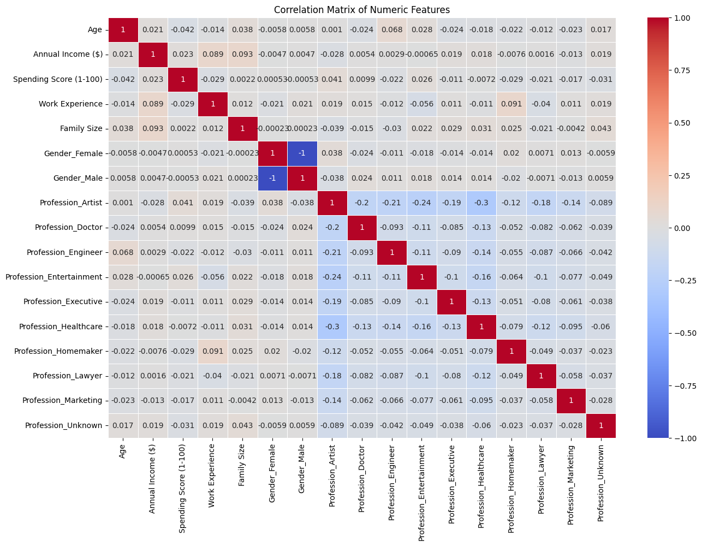
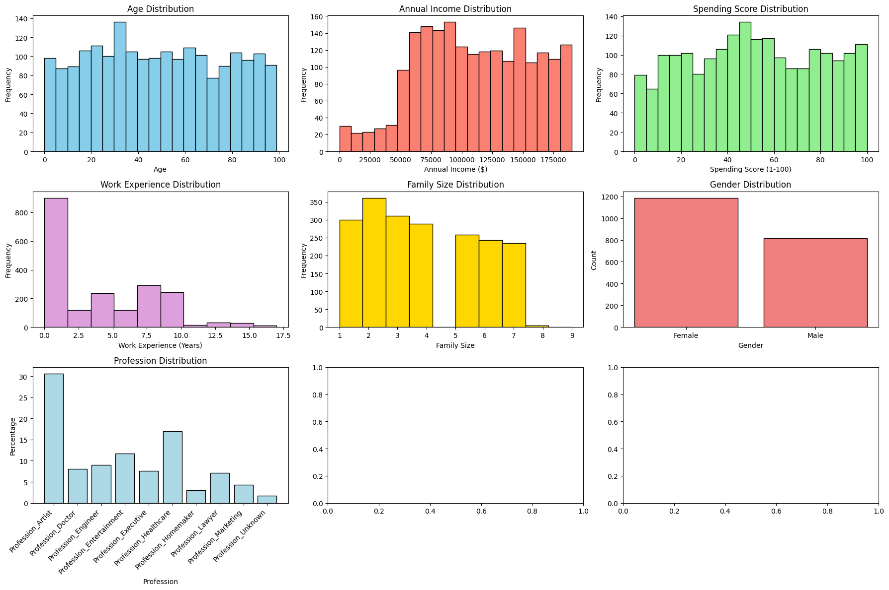
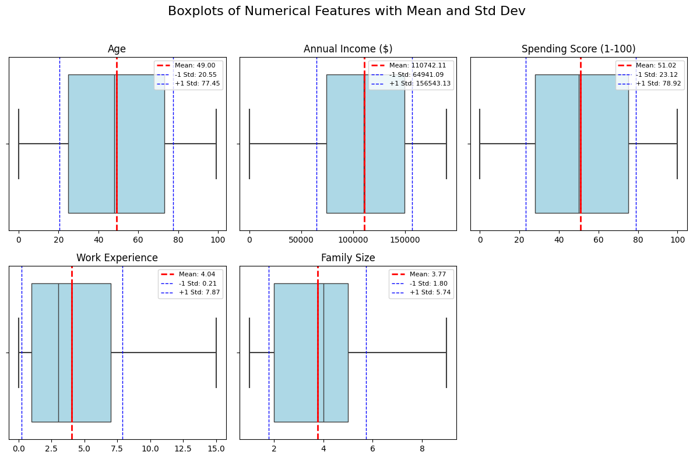
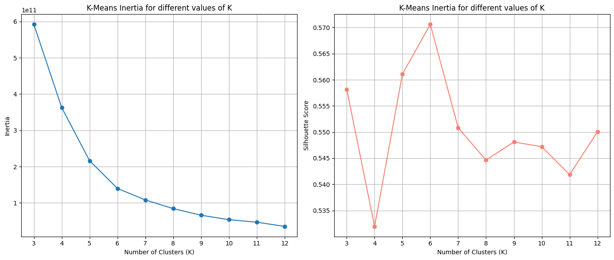
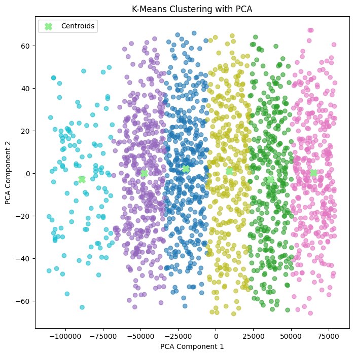
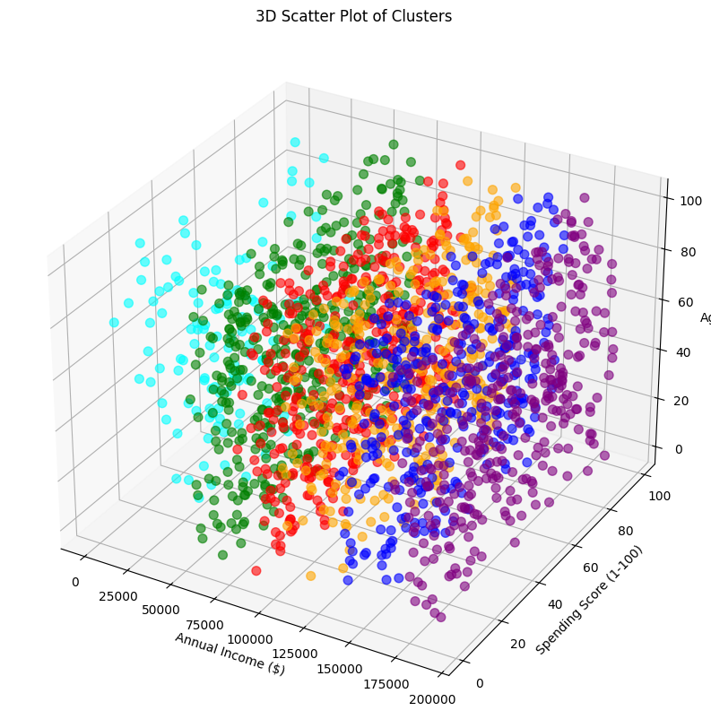

In today’s competitive market, understanding customer spending behavior is crucial for businesses that want to stay ahead. Without clear insights, companies risk wasting resources on products and marketing strategies that don't connect with their audiences. Segmenting customers into distinct groups can help businesses target their efforts more effectively and make smarter decisions.
Using the Shop Customer Data , this project applies clustering techniques to find patterns in customer behavior. By analyzing factors like age, income, and spending scores, I will uncover groups with similar traits and preferences. This project aims to answer the question:
The goal is to turn raw data into actionable insights that businesses can use to make better marketing, product development, and overall strategic decisions.
Introduce the dataThe dataset contains 2000 rows, each representing a customer, with 8 features:
| Feature | Description |
|---|---|
| Customer ID | Unique identifier for each customer. |
| Gender | Gender of the customer. |
| Age | Age of the customer. |
| Annual Income | Annual income of the customer. |
| Spending Score | A score based on the customer's spending behavior. |
| Profession | Customer's profession. |
| Work Experience | Years of experience in their profession. |
| Family Size | Size of the customer's family. |
Clustering is an unsupervised machine learning technique that groups data points based on similarity. It helps uncover natural groupings in data without predefined labels.
In this project, clustering is used to identify customer segments with similar shopping behaviors, which can help businesses target specific groups more effectively.
I used K-Means Clustering, a popular method that divides data into k groups by minimizing the distance between points and their respective group centers.
Before clustering, the data was cleaned and prepared by:
I analyzed the distribution of key variables such as Age, Annual Income, and Spending Score. Visualizations like histograms, heatmaps, and boxplots helped identify patterns and potential outliers.
  For this project, I chose the K-Means clustering algorithm to segment the customer data into distinct groups. The decision to use K-Means was based on several factors related to its strengths and suitability for the dataset.
One of the key reasons for selecting K-Means was its efficiency in handling large datasets. Given the relatively high number of customers in the dataset and the need for quick and interpretable results, K-Means was best choice for me.
I used the Elbow Method and Silhouette Analysis to determine the optimal number of clusters. Based on the results, I chose 6 clusters and fit the K-Means model to the data.
  I interpreted each cluster as follows:
In my code I evaluate the different clusters further. Here are the Summary Statistics:
.png)
Based on the cluster, I found that businesses could focus on premium products for Cluster 2 (high earners) and more budget-friendly options for Cluster 6 (low-income younger group). However, these clusters are not perfect and can be influenced by many factors not captured in the analysis, such as preferences, interests, and external events.
The clustering analysis helped provide a clearer picture of customer behavior, though it also opened up new questions about what other factors might influence spending patterns. Moving forward, incorporating additional data such as lifestyle or interest-based metrics could provide a more nuanced understanding of each cluster.
This project can help businesses fine-tune their marketing and product strategies by understanding different customer groups better. Clustering customers by demographics can lead to more targeted ads, improved products, and smarter spending. But collecting and using personal data comes with serious privacy concerns, especially if people aren't aware their information is being analyzed this way. Businesses could also easily cross a line by making unfair assumptions about customers based only on surface-level traits.
On top of that, clustering alone leaves out a lot. It doesn’t capture things like personal values, interests, or lifestyle choices, which often drive real buying behavior. Relying too much on basic demographic clusters could cause businesses to miss the bigger picture and make decisions that don't actually connect with their customers.
The full code is available below: